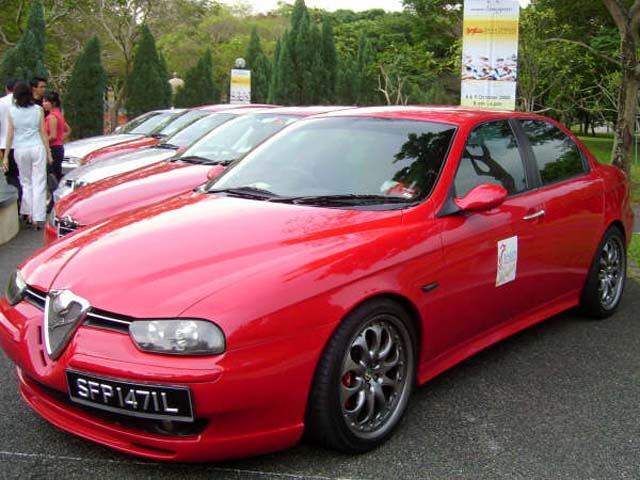
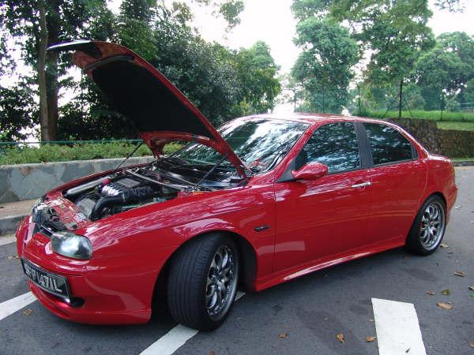
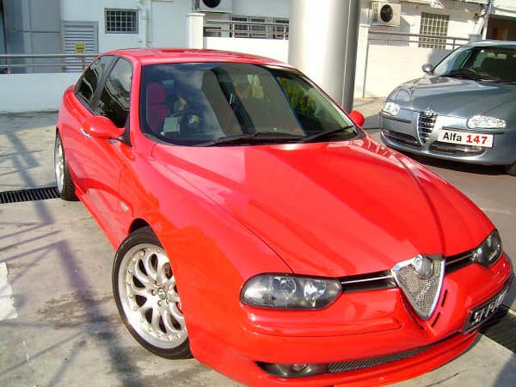
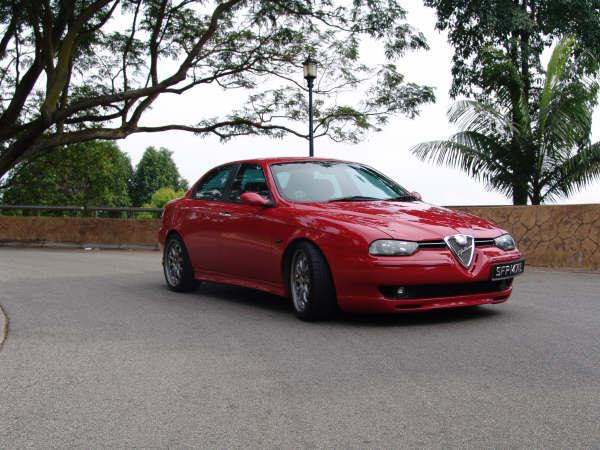
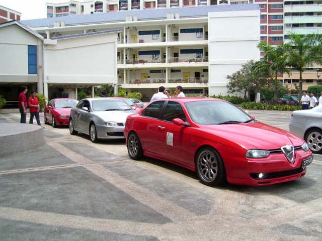
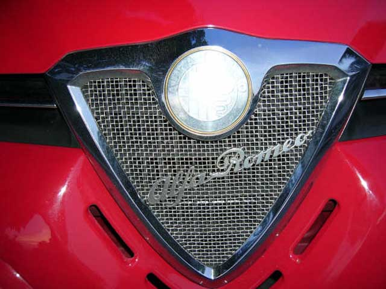

Cuore Sportivo!
Toey Rizal - Singapore
Name: Toey Rizal
Forum nick: EF2
Age: 32
Gender: Male
Location: Singapore
Occupation: Businessman
Interests other than cars:
Remote Control Cars & Collectibles (Classic Cars) Collections.
Previous car:
Mercedes C320 (W203)
Dream car:
Alfa Romeo 8C Competizione
Why did you buy an Alfa 156:
Apart from the sexiness & excellent performance...it has got alot of characters.
If you had to change your car today, what would you buy:
A GTA Sportwagon...but if the piggybank is full, then maybe the Gallardo!!
Info about your 156:
2.5V6 24-valves, Q-system. Quite a rare find in Singapore.
What modifications have you done to it:
-Full Novitec Bodykits
-KW Variant2 coilovers
-Alfa Romeo GTA 4-pot 330mm brakes
-Zender 18" Rims with P-Zero 235/40/18s
-Tar-Ox Brake-Rotors & Pads
-Goodrich SteelBraided Hoses (additional Teflon coated)
-Bosch HID headlights
-Customised Chrome-intake pipes with CDA/BMC airfilters
-Customised Brake-Servo air-charging system
What are your future plans for your 156:
Cosmetics-GTA seats!! Love them. Engine-Upgrading to 3.2V6 AutoDelta full conversion
Do you have any good storys from your Alfa Romeo driving:
My friends says that I'll always announce my arrival with the 'V6 notes' from my engine and exhaust, whenever I come around for our usual meetup. They'll get to hear me from a distance...





Submitted: 2005
![[Prev]](bw_prev.gif)
![[Index]](bw_index.gif)
![[Next]](bw_next.gif)